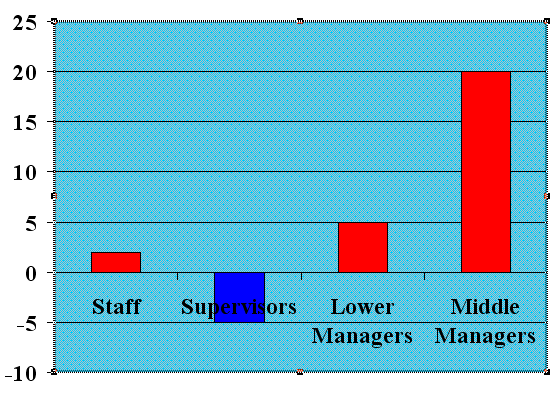

Free
powerpoint
Tutorials
|
Free
powerpoint
Tutorials
|
|
 home home |
Stay at Home and Learn | ||||
Format a Chart Background in PowerPoint |
|||||
|
Charts 1, 2, 3, 4, 5, 6, 7, 8, 9, 10, 11, 12 Flow Charts Tables
In the previous lesson, we formatted the bars of our 2D chart: We can now add a background pattern to the chart. To do this, you need to select just the Plot Area. You should have just the bars or a single bar select at the moment. Right click in a white area anywhere on the grid lines. A good place to right click is between the Lower Manager and Middle Manger bar. You're looking for this menu to appear: If you can see Format Plot Area at the top, then you have the correct menu. Click on this to see the following dialogue box: We're going to have a Fill Effect for our Plot Area, so click the Fill Effects button underneath the colours. You'll see this new dialogue box: Click on the Pattern tab to see the following: You can select a pattern here, along with a Foreground and Background colour. Click the arrow on the Foreground dropdown box: For the Background colour, select Sky Blue: For the pattern itself, we went for the one in the bottom left:
Click OK when you have selected a Pattern, a Foreground colour, and a Background colour. You chart should then look something like ours:  Not much left to do now. We'll add the numbers above and below each column. To do that, click on any of the columns to select them all (they'll each have a square on them). Then right click Format Data Series from the menu: When you click on Format Data Series, you'll see a dialogue box appear. Click the Data Labels tab at the top, and select the Show Values option: When you click OK on your dialogue box, the numbers should appear above and below the columns on your chart: The final thing to do on this chart is to tidy up the text on the Category X Axis, (Staff, Supervisors, etc.) Right click on any of the text labels (Middle Managers, for example). From the menu that appears, click on Format Axis. When you see the Format Axis dialogue box, click on the Font tab: We've set the font to Arial, regular, with a size of 10. The colour was set to white. Click OK when you've set your Font options. Once you've set your Font, your third chart is finished! Here's the
completed version again:
And that's it for standard charts. We'll move on from them. In the next section, you'll see how to add a Flow Chart to a slide. A flow Chart is not really a chart, but a series of boxes or shapes linked together.
|
||||